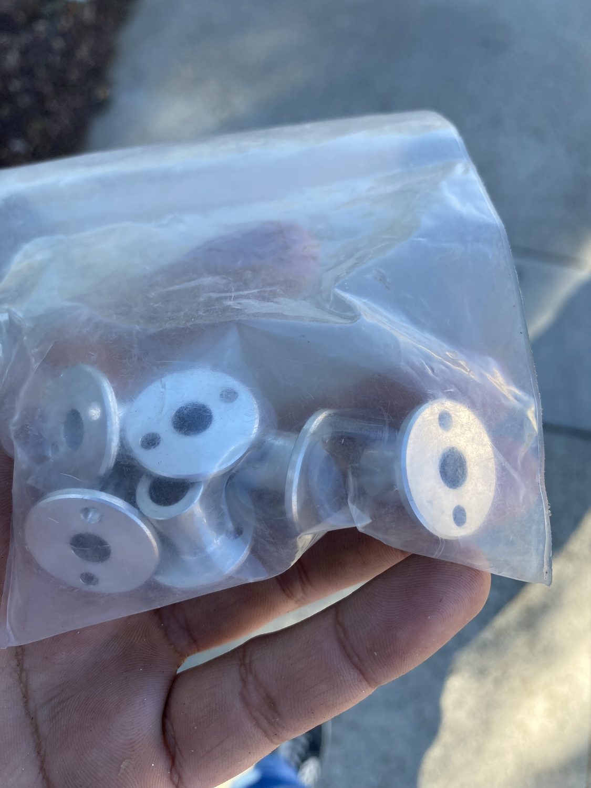
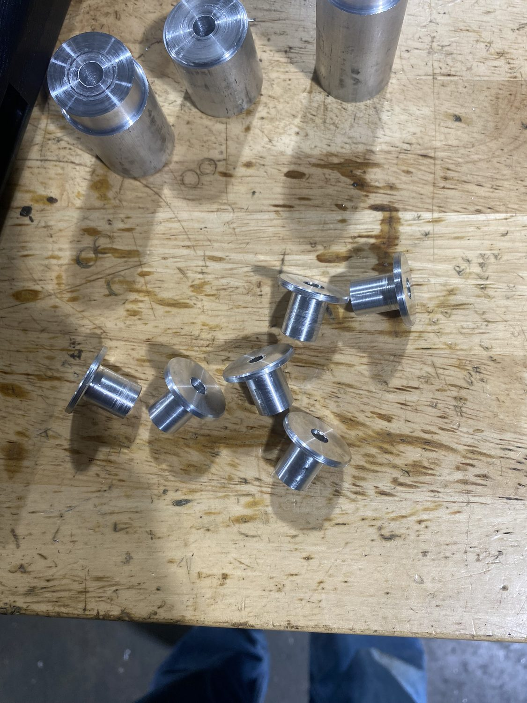
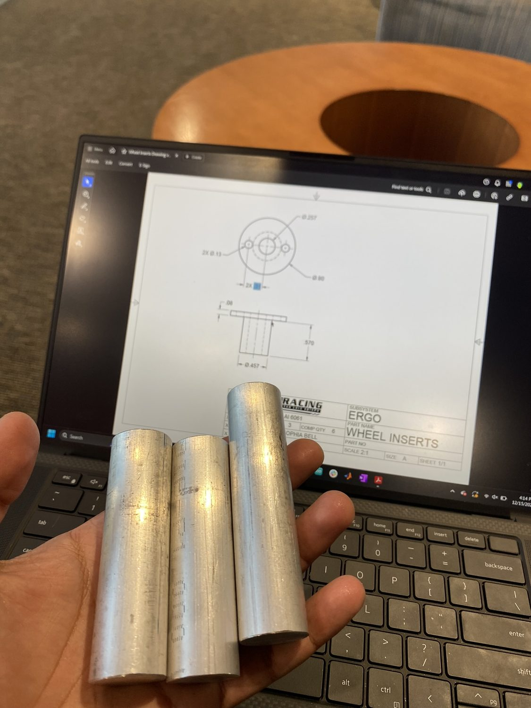
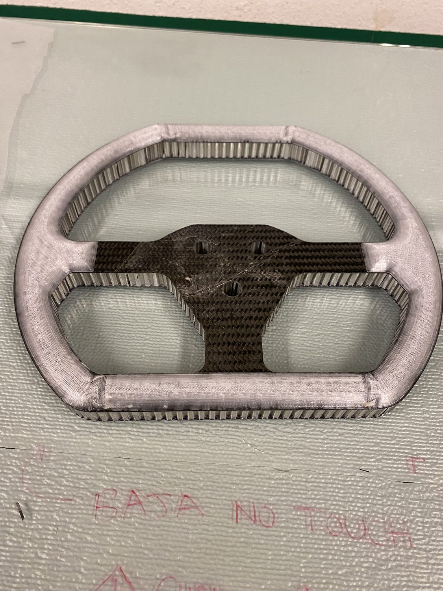
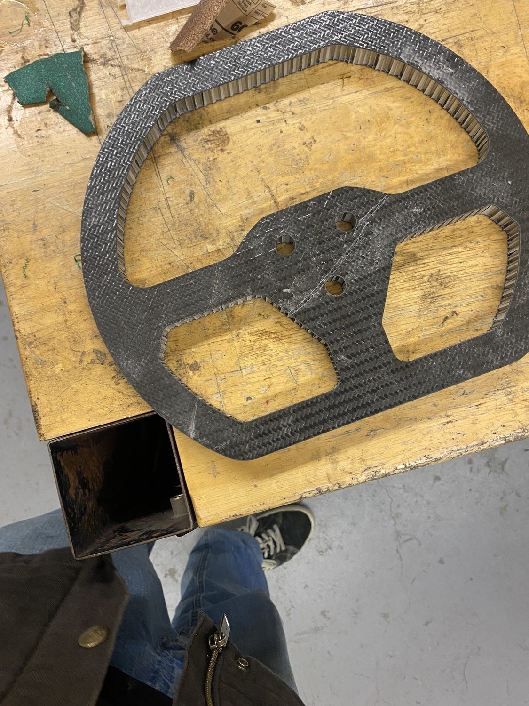
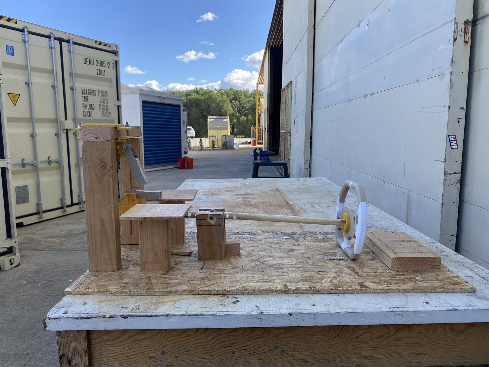
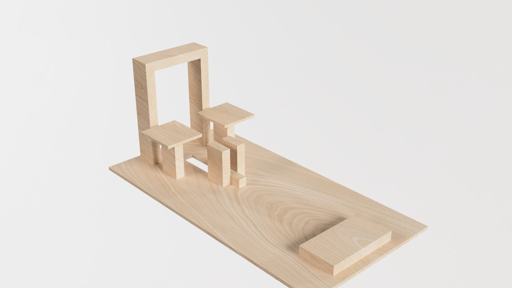

PROJECT 07 / 11 · Baja SAE · Machining
Steering Wheel Inserts
Six aluminum steering-wheel inserts turned on a manual lathe to tight tolerance for the 2025 Baja car.
PartSteering inserts (×6)
MaterialAluminum
ProcessManual lathe
Tolerance±0.005″
Use2025 Baja SAE
Overview
The quick-release steering wheel needed a set of precision inserts. I produced six aluminum inserts on a manual lathe, working from drawings to a ±0.005″ tolerance so they mated cleanly with the hub and grips.
They were installed on the competition steering wheel and ran the full 2025 season.
Highlights
- Six aluminum inserts, manual lathe
- Held to ±0.005″ from drawing
- Ran the 2025 competition
Gallery / 07 frames






